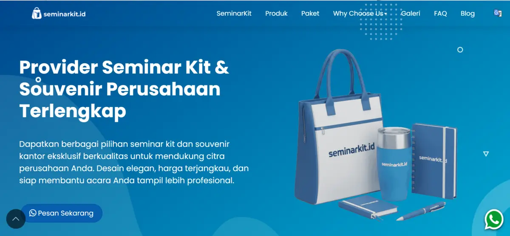
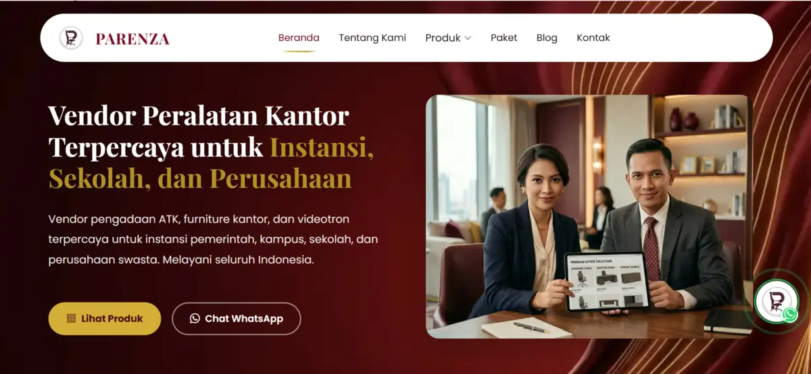
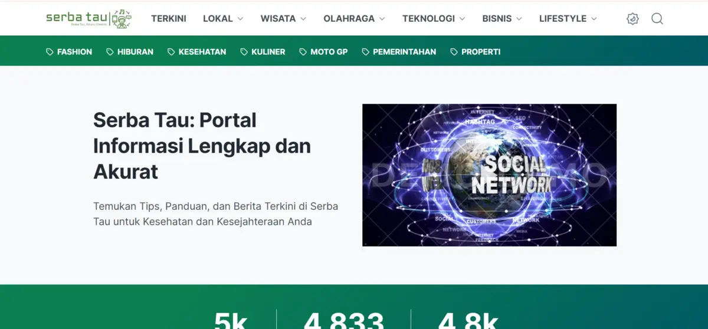

Bantu Bisnis Anda Tampil dan Tumbuh Secara Digital
Kami membuat website, mengelola media sosial, mengoptimasi SEO, dan merancang desain serta branding untuk usaha yang ingin lebih mudah ditemukan dan dipercaya.
Profesional
& Digital Marketing
& Branding
dan Terpercaya
Layanan Kami
Layanan digital yang saling melengkapi untuk membangun kehadiran online bisnis Anda.

Kenapa Memilih
Lentera Digital?
Kami membantu usaha di Malang dan sekitarnya membangun kehadiran digital yang rapi, cepat, dan mudah ditemukan. Layanan bisa dipilih satu per satu atau digabung sesuai kebutuhan.
Tumbuh Lebih Digital
Cara Kerja
Empat langkah sederhana dari ide sampai hasil.
Konsultasi
Ceritakan kebutuhan dan tujuan bisnis Anda lewat WhatsApp.
Perencanaan
Kami susun rencana dan pilihan layanan yang paling sesuai.
Pengerjaan
Tim mengerjakan, Anda memantau dan memberi masukan.
Serah Terima
Hasil diserahkan lengkap dengan panduan penggunaan.
Karya Kami
Beberapa website yang pernah kami buat. Klik untuk melihat detailnya.



Tips & Inspirasi
Tips seputar website, media sosial, SEO, dan desain untuk bisnis Anda.


Pertanyaan Umum
Jawaban singkat untuk hal yang paling sering ditanyakan.